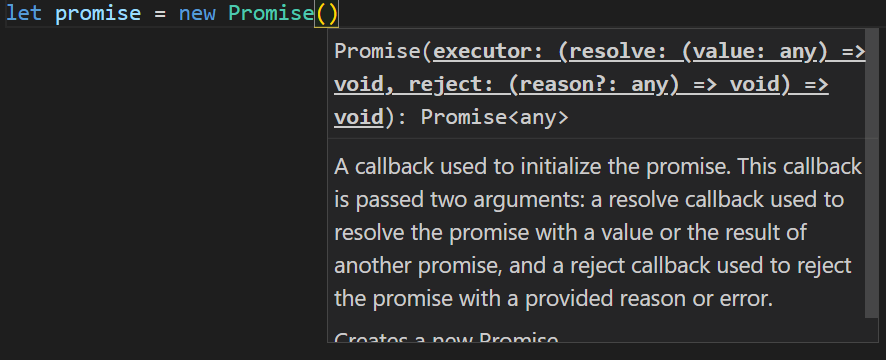
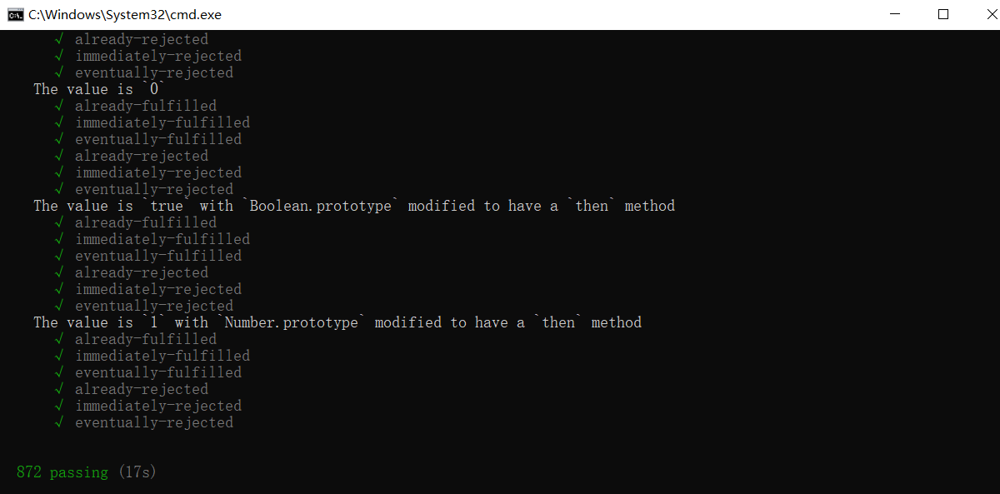

日常的学习笔记，包括 ES6、Promise、Node.js、Webpack、http 原理、Vue 全家桶，后续可能还会继续更新 Typescript、Vue3 和 常见的面试题 等等。
Promise
参考文献 Promise|MDN
Promise 出现的原因：处理多个并发请求，利用 链式调用 解决了 回调地狱 的问题。
Promise 存在三种状态，成功（resolve）、失败（reject）和 等待（pending）。
首先， Promise是一个类 ，需要通过关键字 new 来进行实例化。
Promise接受一个 executor 函数作为执行器，执行器是立即执行的。同时又会接受两个参数作为 成功 和 失败 的回调。

当我们不去执行 成功 或 失败 的回调，当前这个Promise的状态就会维持在 等待 状态。Promise类会返回一个Promise类，方便下一次调用。
1 | let promise = new Promise((resolve, reject)=>{}) |
Promise 实例的返回值会根据调用的函数，来判断当前返回的是 成功状态 或 失败状态，并且会将传入参数返回。在调用函数时，若不传入参数，则会返回 undefined。
1 | // 什么都不传 |
每一个Promise的实例上，都有一个 .then 方法输出上一个实例传入的结果。当前实例状态被改变后，将无法再进行改变。
1 | let promise = new Promise((resolve, reject) => { |
这样的话，我们就可以总结出来 Promise 的几个特点。
特点
- Promise 是一个类，无需考虑兼容性等问题。
- Promise 会传入一个函数（
executor）作为执行器，此执行器是立即执行的。 executor提供了两个函数（resolve和reject）用来描述当前 Promise 的状态，而当前实例存在三种状态，成功状态 、 失败状态 和 等待状态 ，当前实例默认为 等待状态*。如果调用resolve则状态变为 *成功状态 ，调用reject或 发生异常 则状态变为 失败状态 。- Promise 一旦状态变化后，则不能再更改。
- 每个 Promise 实例都有一个
.then方法。
我们可以根据 Promise 的几个特点，手写一套属于自己的 Promise。
手写实现 Promises/A+ 规范
文档规范 Promises/A+
注：代码内容为连续内容，请依序观看。谢谢
Promise的基础功能
根据上述特点，我们就可以简单实现出 Promise 的效果。
1 | const PEDDING = 'PEDDING'; // 等待状态 |
参考 Promise A+规范，我们可以简单实现出来一版 Promise 类的简易实现版。
实现Promise的异步功能
实现 Promise 的异步，我们需要先明确，Promise中只有在触发 .then 方法时（也就是resolve 和 reject ），才是异步的。所以我们利用这样一个思路。
当用户调用 .then 方法时，Promise 此时可能是 等待状态，我们需要先将其暂存起来。后续调用 resolve 和 reject 时，再去触发对应的 onFulfilled 和 onRejected
根据上面的描述，我们可以捕捉到 暂存 和 触发 这两个关键词，那么我们就可以使用 发布订阅 的设计模式来实现此功能。
1 | // ... |
建立两个 用来存储回调函数的数组，先将需要执行的函数存储进数组 中。当异步执行完后，再依次 执行数组内存储的函数。
Promise链式调用
首先我们先要清楚，Promise的出现解决了哪些问题？
- 处理多个并发请求
- 链式调用解决了回调地狱的问题
回调地狱是什么？ 回调地狱就是我们平时在处理业务代码时，下一个接口的api参数需要用到上一个接口的参数。代码上可能就会出现多级嵌套的情况，导致代码阅读起来十分困难。
这里我们就需要用到Promise的链式调用，也就是 .then 方法的循环调用，当调用 .then 方法后，会返回一个新的Promise。
我们先封装一个Promise的异步函数
1 | let fs = require('fs'); |
现在我们需要清楚链式调用出现的几种情况。
.then方法返回的是一个 普通值（不是 Promise） 的情况下，会作为外层下一次.then方法的 成功结果。1
2
3
4
5
6
7
8
9readFile('./a.txt', 'utf8').then((result) => {
return 1;
}, (err) => {
console.log(err);
}).then((result) => {
console.log(result); // 1
}, (err) => {
console.log(err);
}).then方法执行出错，会走到外层下一次.then方法的 失败结果。1
2
3
4
5
6
7
8
9readFile('./a.txt', 'utf8').then((result) => {
throw new Error('error')
}, (err) => {
console.log(err);
}).then((result) => {
console.log(result);
}, (err) => {
console.log(err); // Error: error
})(注：执行错误需要
throw new Error()，如果直接使用return new Error()，属于返回一个Error对象，会执行下一次的成功结果)无论上一次
.then方法执行结果是 成功 还是 失败，只要返回的是普通值，都会执行下一次.then方法的 成功结果。如路径填写错误，Promise会默认执行第一层
.then方法的错误结果，并返回undefined。则下一层的执行结果是成功结果，值为undefined1
2
3
4
5
6
7
8
9
10
11// 路径填写错误
readFile('./a.txt1', 'utf8').then((result) => {
console.log(result)
}, (err) => {
// 相当于在此处 return undefined
console.log(err); // 错误原因
}).then((result) => {
console.log(result); // undefined
}, (err) => {
console.log(err);
})如果
.then方法返回的是一个 Promise 对象，此时会根据 Promise 的结果来处理是成功结果还是失败结果（传入的是成功或失败的内容）。1
2
3
4
5
6
7
8
9readFile(`${bathPath}a.txt`, 'utf8').then((result) => {
return readFile(`${bathPath}${result}`, 'utf8')
}, (err) => {
console.log('err1', err);
}).then((result) => {
console.log('success2', result); // success2 b
}, (err) => {
console.log('err2', err); // error
})
（总结：如果返回的是一个普通值（不是 Promise），就会传递给下一次 .then 方法的成功。如果返回的是一个失败的Promise 或者 抛出异常，就会传递给下一次 .then 方法的失败。）
手写实现promise链式调用
根据上述特点和情况，我们每次在 .then 方法调用后都要返回一个新的 Promise 实例。所以我们可以对之前写好的 .then 方法进行相应的修改。
我们首先来处理 普通值（不是 Promise） 的情况。
（注：在这里我们单独提出来了一个 x，用来进行后续处理）
1 | // 对 .then() 方法进行改写 |
利用上述思路对之前的方法进行改造，这样我们就可以对 普通值 进行处理。
上述处理 普通值 的情况，我们可以稍加改动，使其可以处理更多的情况。为此我们需要封装一个 resolvePromise() 函数来进行处理。
resolvePromise()需要接受四个参数，分别是 当前实例promise 、 结果x 、成功回调resolve 、 失败回调reject。
为了可以将当前实力promise作为参数传递，我们需要先用异步方法 setTimeout （其他方法也可以） 将其进行封装。
1 | then(onFulfilled, onRejected) { |
这样我们就可以读取到 promise实例 了，下面我们来实现 resolvePromise() 函数。
1 | function resolvePromise(promise, x, resolve, reject) { |
（注：在工作中，我们可能会调用别人封装的Promise，里面可能会有问题。所以我们还需要进行一步处理，也就是在代码里面加个*锁*，确保代码的严谨性。）
1 | function resolvePromise(promise, x, resolve, reject) { |
这样我们就实现了 Promise 的链式调用。
特殊情况处理
嵌套Promise
可能还会出现这种情况，我们在 .then 方法的 resolve 中传入一个 Promise实例 ，这种情况我们要如何处理呢？
如下情况
1 | let promise = new Promise((resolve, reject) => { |
针对上述特殊情况，我们需要继续对之前的resolvePromise() 函数 进行改造。
1 | function resolvePromise(promise, x, resolve, reject) { |
关键点就是在于递归调用，直到其值为普通值为止。
参数穿透
我们在调用 .then方法 时，还会出现下面这种情况
1 | new Promise((resolve, reject) => { |
不传入参数的情况下，结果会一直进行传递，直到输出为止。
这种参数穿透的情况，我们也需要在代码上进行改造。
1 | then(onFulfilled, onRejected) { |
Promise测试
我们可以对自己封装的Promise进行测试，需要用到测试包 promises-aplus-tests 。
在Promise实例目录下执行如下代码
1 | npm install promises-aplus-tests -g |
他会自动检测我们封装的Promise是否符合 Promise A+ 规范。
在我们封装的 Promise 文件下添加 延迟对象 。
1 | class Promise { |
（注：catch 和 all 等都不属于Promise规范中包含的方法）
检测完后，我们可以看到其输出结果，根据结果我们可以清楚自己封装的 Promise 是否可以正常运行。

至此，我们就封装好了一个Promise。
延迟对象
用来帮我们减少一次套用，应用并不算广泛。有点类似于代理。
我们可以对最一开始我们自己的 readFile读取操作 进行封装。
1 | function readFile(path, encoding) { |
本篇文章由莫小尚创作，文章中如有任何问题和纰漏，欢迎您的指正与交流。
您也可以关注我的 个人站点、博客园 和 掘金，我会在文章产出后同步上传到这些平台上。
最后感谢您的支持！